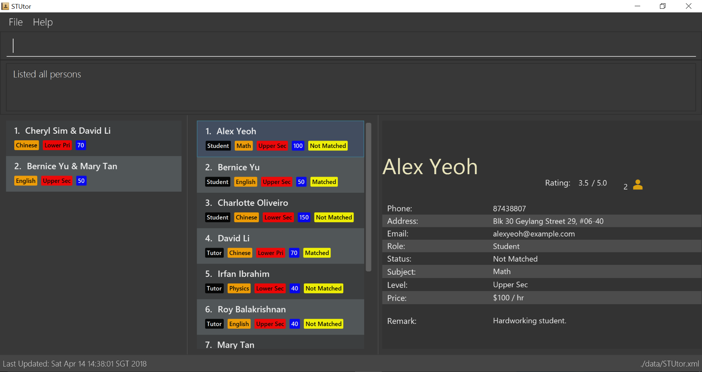

By: Team W11-B1 Since: Jun 2016 Licence: MIT
- 1. Introduction
- 2. Getting Started
- 3. Features
- 3.1. Command Format
- 3.2. Basic Features
- 3.2.1. Viewing help :
help - 3.2.2. Adding a person:
addora - 3.2.3. Listing all persons :
listorl - 3.2.4. Editing a person :
editore - 3.2.5. Filtering all persons list by subject, level, role or status:
filter - 3.2.6. Locating persons by name:
findorf - 3.2.7. Finding people with missing fields:
findmissingorfm(Coming in V1.4) - 3.2.8. Deleting a person :
deleteord - 3.2.9. Selecting a person :
selectors - 3.2.10. Listing entered commands :
historyorh - 3.2.11. Undoing previous command :
undooru - 3.2.12. Redoing the previously undone command :
redoorr - 3.2.13. Clearing all entries :
clearorc - 3.2.14. Exiting the program :
exit - 3.2.15. Saving the data
- 3.2.1. Viewing help :
- 3.3. Advanced Features
- 4. FAQ
- 5. Command Summary
- 6. Prefix Shortcut Summary
1. Introduction
-
STUtor is for tutor coordinators who prefer to use a desktop app for matching and managing a large database of tutors and students.
-
This app is optimized for those who prefer to work with a Command Line Interface (CLI) while still having the benefits of a Graphical User Interface (GUI).
-
If you can type fast, STUtor can get your tutor and student management tasks done faster than traditional GUI apps.
-
This guide gives you an overview of the basic and advanced features of STUtor.
-
Interested? Jump to the Section 2, “Getting Started” now! Enjoy!
2. Getting Started
-
Ensure you have Java version 1.8.0_60 or later installed in your Computer.
Having any Java 8 version is not enough.
This app will not work with earlier versions of Java 8. -
Download the latest STUtor.jar here.
-
Copy the file to the folder you want to use as the home folder for your STUtor.
-
Double-click the file to start the app. The GUI should appear in a few seconds.
 -
Type the command in the command box and press Enter to execute it.
e.g. typinghelpand pressing Enter will open the help window. -
Some example commands you can try:
-
list: lists all contacts -
add n/John Doe p/98765432 e/johnd@example.com a/311, Clementi Ave 2, #02-25 $/50 sub/Math lvl/Lower Sec stat/Not Matched r/Student: adds a contact namedJohn Doeto STUtor. -
delete 3: deletes the 3rd contact shown in the current list -
exit: exits the app
-
-
Refer to Section 3, “Features” for details of each command.
3. Features
3.2. Basic Features
3.2.1. Viewing help : help
Format: help
At any time if you are unsure of how to use STUtor, this command will bring you to the help page.
3.2.2. Adding a person: add or a
Format: add n/NAME [p/PHONE_NUMBER] [e/EMAIL] [a/ADDRESS] [$/PRICE] [sub/SUBJECT] [lvl/EDUCATION_LEVEL] [stat/STATUS] [r/ROLE] [t/TAG]…
Adds a new person to STUtor.
|
Only the NAME field is required for the command to be accepted, all other fields are optional. |
Examples:
-
add n/John Doe p/98765432 e/johnd@example.com a/311, Clementi Ave 2, #02-25 $/50 sub/Math lvl/Lower Sec stat/Not Matched r/Student -
add n/Betsy Crowe p/91562389 e/betsycrowe@example.com a/Pasir Ris Drive 10, #06-02 $/30 sub/Chinese lvl/Upper Pri stat/Not Matched r/Tutor -
`add n/Carl Kurz
|
Press Tab key once after typing |
3.2.4. Editing a person : edit or e
Format: edit INDEX [n/NAME] [p/PHONE] [e/EMAIL] [a/ADDRESS] [$/PRICE] [sub/SUBJECT] [lvl/EDUCATION_LEVEL] [stat/STATUS] [r/ROLE] [t/TAG]…
Edits an existing person in STUtor.
Examples:
-
edit 1 p/91234567 e/johndoe@example.com
Edits the phone number and email address of the 1st person to be91234567andjohndoe@example.comrespectively. -
edit 2 n/Betsy Crower t/
Edits the name of the 2nd person to beBetsy Crowerand clears all existing tags.
|
Press Tab key once after typing |
3.2.5. Filtering all persons list by subject, level, role or status: filter
Format: filter KEYWORD [MORE_KEYWORDS]
Filters all persons list whose SUBJECT, EDUCATION_LEVEL, STATUS, or ROLE contain any of the given keywords.
Examples:
-
filter Math
Returns persons withMathsubject -
filter Student
Returns persons withStudentrole
3.2.6. Locating persons by name: find or f
Format: find KEYWORD [MORE_KEYWORDS]
Finds persons whose NAME contain any of the given keywords.
Examples:
-
find John
ReturnsjohnandJohn Doe -
find Betsy Tim John
Returns any person having namesBetsy,Tim, orJohn
3.2.7. Finding people with missing fields: findmissing or fm (Coming in V1.4)
Format `findmissing [FIELD]…
If no arguments for FIELD is entered, lists all people with at least one field with an empty value.
Otherwise, finds all people with an empty value in at least one entered FIELD.
3.2.8. Deleting a person : delete or d
Format: delete INDEX
Deletes the specified person from STUtor.
Examples:
-
list
delete 2
Deletes the 2nd person in STUtor. -
find Betsy
delete 1
Deletes the 1st person in the results of thefindcommand.
|
Press Tab key once after typing |
3.2.9. Selecting a person : select or s
Format: select INDEX
Selects the person identified by the index number used in the last person listing.
Examples:
-
list
select 2
Selects the 2nd person in STUtor. -
find Betsy
select 1
Selects the 1st person in the results of thefindcommand.
|
Press Tab key once after typing |
3.2.10. Listing entered commands : history or h
Format: history
You can list all the commands that you have entered in reverse chronological order.
|
Pressing the ↑ and ↓ arrows will display the previous and next input respectively in the command box. |
3.2.11. Undoing previous command : undo or u
Format: undo
You can easily restore STUtor to the state before the previous undoable command was executed.
|
Undoable commands: those commands that modify STUtor’s content ( |
Examples:
-
delete 1
list
undo(reverses thedelete 1command) -
select 1
list
undo
Theundocommand fails as there are no undoable commands executed previously. -
delete 1
clear
undo(reverses theclearcommand)
undo(reverses thedelete 1command)
3.2.12. Redoing the previously undone command : redo or r
Format: redo
You can easily reverse the most recent undo command.
Examples:
-
delete 1
undo(reverses thedelete 1command)
redo(reapplies thedelete 1command) -
delete 1
redo
Theredocommand fails as there are noundocommands executed previously. -
delete 1
clear
undo(reverses theclearcommand)
undo(reverses thedelete 1command)
redo(reapplies thedelete 1command)
redo(reapplies theclearcommand)
3.2.13. Clearing all entries : clear or c
Format: clear
To clear all entries from your STUtor, use the clear command.
3.2.15. Saving the data
STUtor data are saved in the hard disk automatically after any command that changes the data.
There is no need to save manually.
3.3. Advanced Features
3.3.1. Encrypting data files [coming in v2.0]
{explain how the user can enable/disable data encryption}
4. FAQ
Q: How do I transfer my data to another Computer?
A:
1) Please install STUtor in the other computer.
2) Navigate to main/data, and overwrite the empty STUtor.xml file
with the file of the same name found on your previous computer.
You can the file under the same path of main/data
5. Command Summary
| Command | Shortcut | Format | Example |
|---|---|---|---|
|
|
|
|
|
|
|
|
|
|
|
|
|
|
|
|
|
|
|
|
|
|
|
|
|
|
||
|
|
||
|
|
||
|
|
||
|
|
||
|
|||
|
6. Prefix Shortcut Summary
You can use these shortcuts in adding a person, or editing a person’s details.
| Applicable field | Shortcut | Equivalence in full |
|---|---|---|
subject |
|
|
subject |
|
|
subject |
|
|
subject |
|
|
level |
|
|
level |
|
|
level |
|
|
level |
|
|
status |
|
|
status |
|
|
role |
|
|
role |
|
|